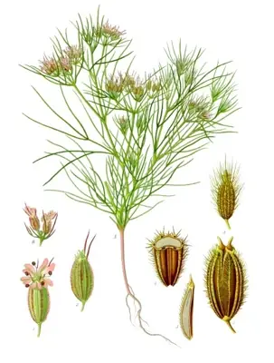

pranet · 出典付きの植物図鑑
クミン
Cuminum cyminum L. · Apiaceae

クミン は、セリ科の一年生草本である。中東から東はインドまで広がる地域に自生する。種子（クミン・シード）に強い芳香とほろ苦み、辛みがあり、香辛料として用いられる。一般には種子と呼ばれているが、植物学上は果実である。クミンは伝統医学において役に立つと考えられているものの、医薬品として安全または有効性があるとする質の高いエビデンスは存在しない。
出典: Wikipedia 日本語版「クミン」 · CC BY-SA 4.0
異名: Cuminia cyminum J.F.Gmel., Cuminum aegyptiacum Mérat ex DC., Cuminum hispanicum Mérat ex DC., Cuminum odorum Salisb., Cuminum officinale Garsault, Cuminum sativum J.Sm., Cyminon longeinvolucellatum St.-Lag., Ligusticum cuminum Crantz, Luerssenia cyminum Kuntze, Selinum cuminum E.H.L.Krause
同定や利用は自己責任でお願いします。この図鑑だけを根拠に野生の植物を食べないでください。
出典
- 学名: World Flora Online Plant List 2026-06 · CC0 1.0
- 名前: Wikipedia の記事名と Wikidata · CC0 1.0（Wikidata）。記事名は事実
- 説明: Wikipedia 日本語版「クミン」 · CC BY-SA 4.0
- 食用・毒性: World Checklist of Useful Plant Species (Diazgranados et al. 2020, RBG Kew) · CC BY 4.0
- 分布: World Checklist of Vascular Plants (WCVP), RBG Kew, version 2026-06-04 · CC BY 3.0
このページは pranet のデータから自動生成しています。コードは MIT、データは項目ごとのライセンス（説明）。